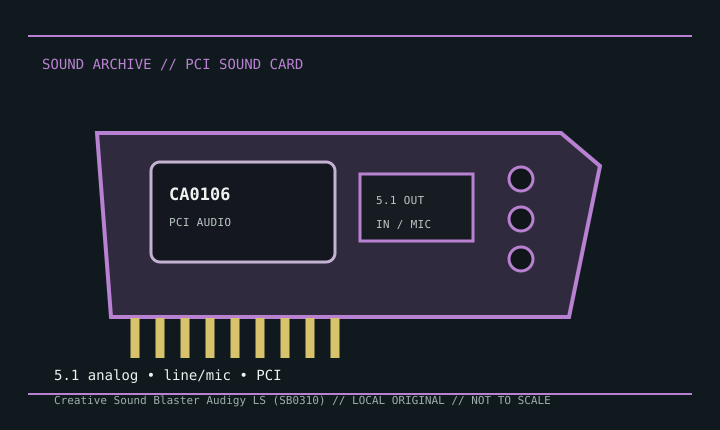

[ INDIVIDUAL MODEL // SOUND HARDWARE ]
Creative Sound Blaster Audigy LS (SB0310)
The SB0310 Audigy LS is a PCI card in Creative’s Audigy-era lineup. It uses the CA0106 driver family and is not interchangeable with the Audigy 2 ZS, Audigy FX, or Audigy Rx entries elsewhere in this catalog.

Detailed specifications
| Exact model / scope | Creative Sound Blaster Audigy LS, SB0310. Confirm the silk-screened model ID because related Audigy boards use different audio processors and driver packages. |
|---|---|
| Bus / host | Conventional PCI desktop expansion card. The SB0310 requires the appropriate legacy PCI slot and its own Creative driver package. |
| Processor / playback | Creative CA0106 audio processor family, with multi-channel speaker playback and software-controlled effects. Do not attribute the hardware acceleration or EAX feature set of higher-end EMU10K-based Audigy products to this card. |
| Connectors / channels | Three 3.5 mm rear jacks provide the model’s 5.1 analog speaker arrangement; line/microphone input and digital functions follow the SB0310 manual/software routing. |
| Conversion / formats | Creative documentation describes 24-bit audio paths with mode-specific recording and playback limits. Use the official manual and driver panel for rates; do not treat “24-bit” as a universal 96 kHz multichannel claim. |
| Drivers / operating systems | Creative’s SB0310-specific legacy download search and the Linux ALSA CA0106 driver matrix are useful starting points. Original vendor support focused on contemporary Windows releases; Linux support is community/kernel driver support. |
Compatibility & preservation
Retain the SB0310 ID with its driver/control-panel installer and manual. Verify which rear jack is configured for center/subwoofer, and distinguish the CA0106 Audigy LS from EMU10K-based Audigy models when restoring a legacy system.
- Photograph the model marking, PCB revision, and all included brackets or cables before service.
- Save the matching driver, manual, and working host configuration; bus fit alone does not establish driver compatibility.
- Use the manufacturer’s model-specific pinout and routing diagram before connecting line, microphone, digital, or multichannel outputs.
Sources & documentation
- Creative — SB0310 legacy driver searchOfficial Creative download search scoped to the SB0310 model identifier.
- ALSA Project — CA0106 PCI audio driver matrixLinux driver documentation for the CA0106 family used by Audigy LS hardware.